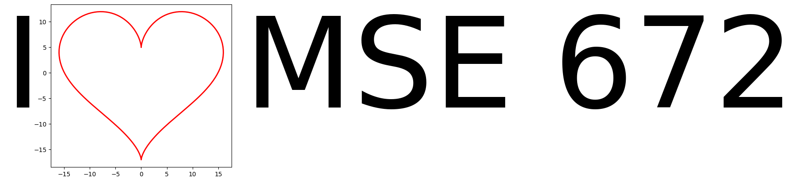

Chapter 1: Introduction
Homework 1¶
Test Python Environment

part of
MSE672: Introduction to Transmission Electron Microscopy
by Gerd Duscher, Spring 2026 Microscopy Facilities Institute of Advanced Materials & Manufacturing Materials Science & Engineering The University of Tennessee, Knoxville
Background and methods to analysis and quantification of data acquired with transmission electron microscopes.
Load Packages¶
First we need to load the libraries we want to use. Here we use:
numpy: numerical library
matplotlib: graphic library
Both of these packages are provided by annaconda and are already installed in Google Colab.
[1]:
import numpy as np
import matplotlib.pylab as plt
Now we run the next code cell to plot a graph.
[2]:
# Generate plotting values
t = np.linspace(0, 2*np.pi, 200)
x = 16 * np.sin(t)**3
y = 13 * np.cos(t) - 5 * np.cos(2*t) - 2 * np.cos(3*t) - np.cos(4*t)
plt.figure()
plt.plot(x,y, color='red', linewidth=2)
plt.text(-23, 0, 'I', ha='center', va='center', fontsize=206)
plt.text(20,0, 'MSE 672',va='center', fontsize=206)
plt.gca().set_aspect('equal')

Who would have thought that the formula of love is based on trigonometry?
Try to run this in colab and you rown computer.
[ ]: